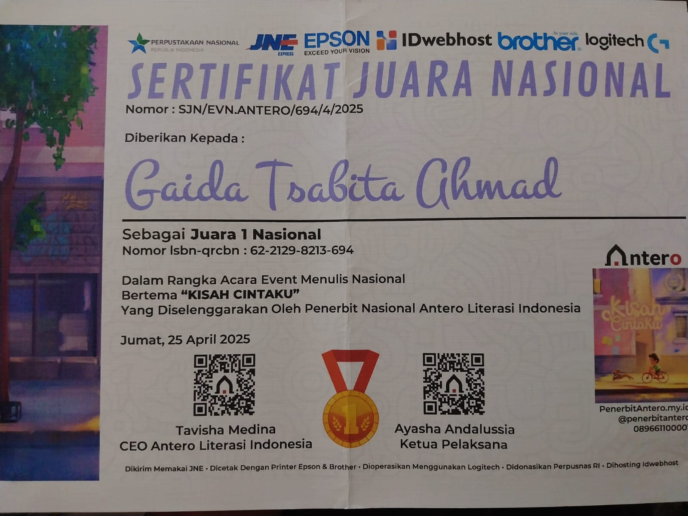
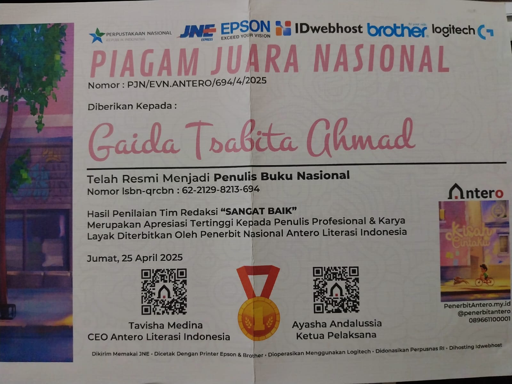
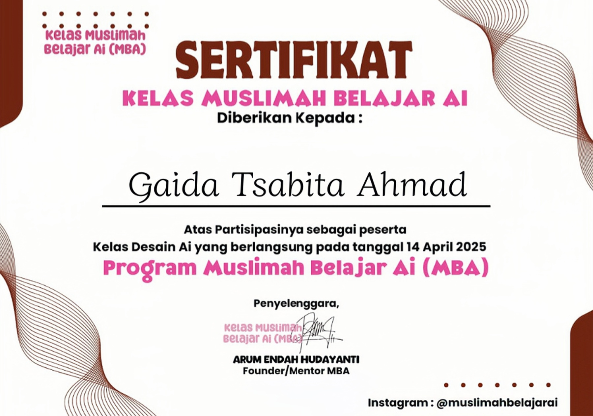
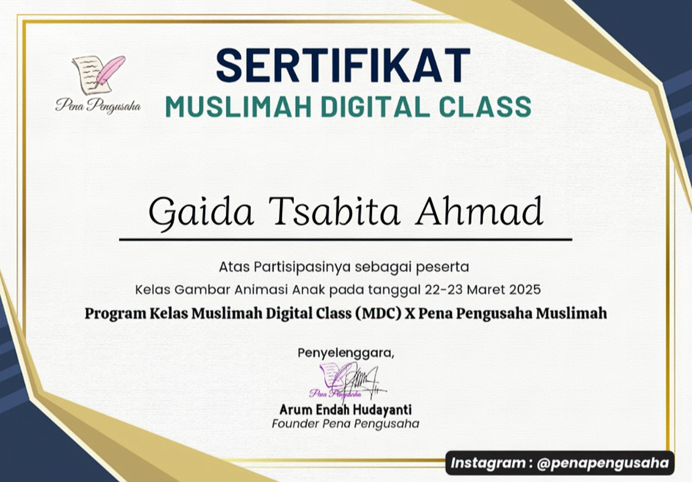

Prestasi

Gaida mendapatkan Sertifikat Juara Nasional dari Penerbit Antero sebagai bentuk apresiasi atas karya tulisnya yang berjudul "Kisah Cintaku". Sertifikat ini merupakan simbol penghargaan bagi seluruh penulis yang telah berpartisipasi dalam menghidupkan literasi nasional melalui karya kreatif mereka.

Gaida secara resmi dinyatakan sebagai Penulis Buku Nasional dengan hasil penilaian "Sangat Baik" oleh tim redaksi. Piagam ini menandakan bahwa karya Gaida dinilai profesional dan layak untuk diterbitkan secara luas oleh Penerbit Nasional Antero Literasi Indonesia.

Gaida terpilih sebagai peserta yang lolos dalam Pentas Cerita Nasional Ke-5 pada Festival Penulis 2026. Penghargaan ini diterima atas karya cerpen berjudul "Aku Baik-Baik Saja, Kataku" yang diakui sebagai karya yang inovatif dan menginspirasi.

Gaida mendapatkan Sertifikat Penghargaan dari Program Muslimah Belajar Ai (MBA) atas partisipasinya dalam Kelas Desain Ai pada 14 April 2025. Sertifikat ini menjadi simbol apresiasi bagi peserta yang siap berinovasi dan menguasai teknologi kreatif digital.

Gaida mendapatkan Sertifikat Penghargaan atas partisipasinya dalam Kelas Gambar Animasi Anak (22–23 Maret 2025) oleh MDC X Pena Pengusaha Muslimah. Sertifikat ini merupakan apresiasi atas dedikasinya dalam mengembangkan kreativitas dan karya animasi.